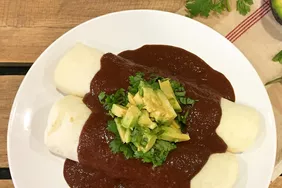

mole recipe
This authentic mole sauce is made with hot chiles, rich chocolate, spices, and tomatillos for a delicious topping on enchiladas and stewed meats.
Prepare your taste buds for an explosion of flavor with this tantalizing mole recipe. A symphony of rich and complex flavors awaits as you embark on this culinary adventure. Begin by toasting a medley of aromatic spices, including cinnamon, cumin, and cloves, releasing their fragrant essence into the air. Next, roast plump tomatoes, fiery chilies, and earthy garlic until they become irresistibly charred and smoky. Then, carefully blend this fiery concoction with toasted almonds, sesame seeds, and dark chocolate, creating a velvety, indulgent sauce that is the heart and soul of this dish. Finally, allow your tender, slow-cooked meat of choice to bathe luxuriously in this luscious mole, absorbing its complex flavors and tenderizing to perfection. With every savory, spicy, and slightly sweet bite, this mole recipe will transport your taste buds to new heights of culinary delight..
ingredients
- 3 dried chipotle chiles, stemmed and seeded
- 2 dried guajillo chiles, stemmed and seeded
- 2 dried ancho chiles, stemmed and seeded
- 2 cups chicken broth
- 1 dinner roll, torn into pieces
- 2 corn tortillas, cut into 1-inch strips
- 5 tomatillos, cut in half crosswise
- 2 tomatoes, cut in half crosswise
- 1 tablespoon lard
- 1 onion, halved and thinly sliced
- ½ head garlic, peeled and sliced
- ⅓ cup chopped peanuts
- ¼ cup raisins
- 2 tablespoons cumin seeds
- 1 tablespoon dried thyme
- 6 whole allspice berries
- 5 whole cloves
- 3 cinnamon sticks
- 1 cup chicken broth
- 5 ounces dark chocolate, coarsely chopped
- 3 tablespoons white sugar
- 1 teaspoon salt
steps
- Toast chipotle, guajillo, and ancho chiles in a dry pan over medium heat, stirring constantly, until warm and aromatic, about 3 minutes. Transfer to a blender.
- Heat 2 cups chicken broth in a saucepan until it begins to simmer, about 5 minutes. Pour broth into the blender.
- Toast dinner roll pieces and tortilla strips in a dry pan over medium heat, stirring constantly, until lightly browned, about 3 minutes. Transfer to the blender with chicken broth and chiles.
- Allow chiles, toasted bread, and tortillas to soak, fully submerged, in the chicken broth until softened, about 10 minutes. Blend the mixture until smooth.
- Cook tomatillos and tomatoes in a dry skillet on medium-high heat until soft and blackened, 3 to 4 minutes per side. Place tomatoes in the blender with the chile puree.
- Melt lard in a large skillet over medium heat. Stir in onion, garlic, peanuts, raisins, cumin seeds, thyme, allspice berries, cloves, and cinnamon sticks; cook and stir until onions are soft and golden, 5 to 8 minutes. Remove the cinnamon sticks and other whole spices; add onion mixture to the blender with the chile-tomato mixture and blend until smooth.
- Pour chile puree into a large saucepan over medium heat. Stir in 1 cup chicken broth, chocolate, sugar, and salt. Bring mixture to a simmer; stir until chocolate is melted and sauce is thickened and slightly reduced, 10 to 15 minutes.